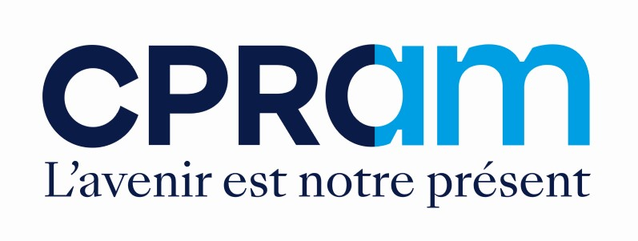

Usage interneSupport de maîtrise du fonds à l'usage de l'équipe commerciale : thème de l'autonomie stratégique européenne, processus de gestion, composition, performance et lecture événementielle du parcours de la valeur liquidative. L'ensemble du contenu est issu des supports officiels CPRAM (pitchbook, reporting mensuel, DIC PRIIPs, infographie, communication du gérant). Chaque mouvement notable de la VL est rattaché à un fait documenté et sourcé.
Communication promotionnelle destinée aux investisseurs professionnels. Données : reporting mensuel CPRAM au 31/05/2026, pitchbook (mai 2026), DIC PRIIPs (publié le 18/12/2025), infographie (28/03/2026) ; historique de VL quotidienne du 01/06/2023 au 24/06/2026. Date de création du fonds : 28/03/2023. Les performances passées ne préjugent pas des performances futures.
Valeur liquidative réelle de la part I EUR (indexée en base 100), comparée à son indice de référence MSCI EMU Net Return. Les points numérotés rattachent chaque phase du parcours à un fait documenté (marché, thème, gestion). Survoler un repère pour un aperçu, cliquer pour le détail complet et les sources.
Export VL CPRAM part I EUR (LU2570611249) du 01/06/2023 au 24/06/2026 ; série de l'indice MSCI EMU Net Return (base 100 au 28/03/2023) ; repères issus du pitchbook, du reporting mensuel et de la communication du gérant. VL indexée en base 100 à l'ouverture de la fenêtre affichée, nette de frais. Sur longue période, le fonds reste en léger retrait de son indice (écart d'environ -1,3 pt/an depuis la création) ; il reprend l'avantage en 2026 (YTD +10,52 % contre +8,01 %, au 31/05/2026).
CPR Invest - European Strategic Autonomy est un fonds d'actions principalement de la zone euro, géré activement, investi sur le thème de l'autonomie stratégique de l'Europe. Une approche sélective et granulaire qui ne retient que les activités et secteurs contribuant à la résilience stratégique de l'Europe.
Une réponse aux fragilités de l'Europe : les événements récents (Covid, guerre en Ukraine, crise énergétique, géopolitique américaine) ont révélé de fortes dépendances externes dans de nombreux domaines critiques.
Une approche sélective et granulaire qui ne prend en compte que les activités et secteurs contribuant à la résilience stratégique de l'Europe.
Un changement de paradigme en Europe avec la géopolitique de l'administration Trump : hausse des dépenses de défense, plan de dépenses allemand, volonté de réindustrialiser.
De nombreux plans de soutien au niveau européen (REARM Europe, Chips Act, Net-Zero Industry Act, Green Deal) qui financent durablement la thématique.
Un pionnier de l'investissement thématique : une gamme qui s'appuie sur 14 stratégies pour répondre aux enjeux de demain, avec plus de 15 ans de track-record.
Une équipe expérimentée de plus de 20 gérants et analystes actions dédiés, adossée au leader européen de la gestion d'actifs (groupe Amundi).
Objectif d'investissement : surperformer les marchés d'actions européens sur la période de détention recommandée (au moins cinq ans) en investissant dans des actions impliquées dans des secteurs stratégiques qui contribuent à l'autonomie et à la résilience de l'Europe, tout en intégrant des critères ESG dans le processus d'investissement.
Source : pitchbook CPR Invest - European Strategic Autonomy (sections « Pourquoi ce fonds / maintenant / CPRAM »), mai 2026 ; objectif d'investissement issu du DIC PRIIPs (publié le 18/12/2025) et du reporting mensuel (31/05/2026).
Repères à connaître pour le dossier. En cas d'écart, les documents légaux (Prospectus, DIC PRIIPs) et la fiche produit officielle font foi.
| Code ISIN (part I EUR) | LU2570611249 |
| Code Bloomberg | CPEUSTI LX |
| Date de création | 28/03/2023 |
| Forme juridique | Compartiment de SICAV luxembourgeoise · OPCVM |
| Société de gestion | CPR Asset Management (groupe Amundi) |
| Devise de la part | EUR · capitalisation |
| Indice de référence | MSCI EMU Net Return |
| Classification SFDR | Article 8 |
| Exposition actions | 75 % à 120 % de l'actif |
| Éligibilité PEA | Oui (min. 75 % UE / EEE) |
| Horizon recommandé | 5 ans minimum |
| Dépositaire / valorisateur | CACEIS Bank, succursale de Luxembourg |
Source : reporting mensuel CPR Invest - ESA (31/05/2026) et DIC PRIIPs (publié le 18/12/2025).
Classe de risque moyenne (4/7). Le fonds présente un risque de perte en capital ; il ne prévoit aucune protection contre les aléas de marché. Le risque de liquidité du marché peut accentuer la variation des performances.
Source : DIC PRIIPs CPR Invest - ESA, publié le 18/12/2025.
| Frais de gestion & autres frais | 0,96 % / an |
| Coûts de transaction | 0,24 % / an |
| Commission de surperformance | 15 % de la surperformance au-delà du MSCI EMU NR (méthodologie AEMF) |
| Coûts d'entrée (max.) | jusqu'à 5,00 % |
| Coûts de sortie | néant |
La commission de surperformance est due dès lors que le fonds surperforme son indice, y compris si sa performance absolue est négative ; les sous-performances des 5 dernières années doivent toutefois être compensées au préalable.
Source : DIC PRIIPs CPR Invest - ESA (part I EUR), publié le 18/12/2025.
Synthèse des arguments structurants tels que présentés dans les supports officiels CPR Invest - European Strategic Autonomy.
Une stratégie qui accompagne l'Europe dans le renforcement de son autonomie stratégique, alors que les fragilités révélées (santé, défense, énergie, alimentation, industrie) appellent une réponse durable.
La thématique bénéficie d'un soutien budgétaire sans précédent : REARM Europe (~800 Md€), « bazooka » allemand (500 Md€), Chips Act, Net-Zero Industry Act, Green Deal et nouvelle PAC.
Un univers à cinq dimensions (industrie, défense, finance, santé, alimentation) qui ne retient que les activités et entreprises les plus stratégiques pour la résilience de l'Europe.
Classé SFDR Article 8, le fonds vise une note ESG supérieure à celle de son indice de référence et applique des exclusions normatives et sectorielles, y compris sur la défense controversée.
Portefeuille de conviction (≈ 55 valeurs), approche TVT (Thèse / Valorisation / Timing), screening HOLT & FactSet et suivi des risques en synergie avec les analystes d'Amundi.
Source : pitchbook CPR Invest - ESA (sections « Pourquoi ce fonds » et « Processus »), mai 2026 ; nombre de valeurs et coûts : reporting mensuel (31/05/2026).
Le fonds est géré au sein de l'équipe Actions thématiques de CPRAM. Damien Mariette pilote la thématique Souveraineté européenne, en co-gestion avec Eric Labbé.
Rejoint l'équipe Actions thématiques de CPRAM en janvier 2023 pour gérer la thématique Souveraineté européenne. Il débute comme gérant actions européennes en 2008 à la Banque Populaire du Val de France, devient gérant d'actions internationales au Fonds de Garantie Automobiles en 2009, puis gère des actions européennes pour la Financière de l'Échiquier et Sycomore (2012-2018). Master en finance de marché de l'université d'Artois.
Rejoint l'équipe Actions thématiques de CPRAM en 2018. Il gère les thématiques Mid Cap et High Dividend depuis 2013, le thème Vieillissement de la population depuis 2018 et le thème Ambition France depuis 2020, et co-gère les Technologies médicales depuis 2021. Carrière débutée en 1992 (Crédit Lyonnais), puis Crédit Agricole AM en 1997 et CPRAM dès 2001. Master Banque et Finance (Paris II Panthéon-Assas), CFA Charterholder.
Source : pitchbook CPR Invest - ESA (mai 2026) et reporting mensuel (équipe de gestion). Rien ne garantit que les professionnels actuellement employés par CPRAM continueront à l'être ; les performances ou succès passés ne préjugent pas des résultats futurs.